GC
GC的作用域
方法区和堆，参见 JVM体系结构概览。
常见的垃圾回收算法
GC四大算法：
- 引用计数：很久之前用的，缺点明显
- 新生代采用复制算法，不会产生内存碎片，但是浪费内存
- 老年代采用标记清除，会产生内存碎片
- 标记压缩，在标记清除的基础上，移动对象，规避内存碎片，但是移动对象会有损耗；
引用计数法 （JVM的实现一般不采用这种方式）
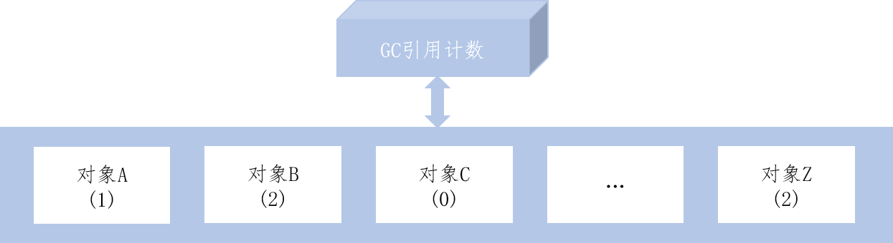
对象调用+1，释放-1.
缺点：
- 每次对对象赋值时均要维护引用计数器，且计数器本身也有一定的消耗；
- 较难处理 循环引用
复制
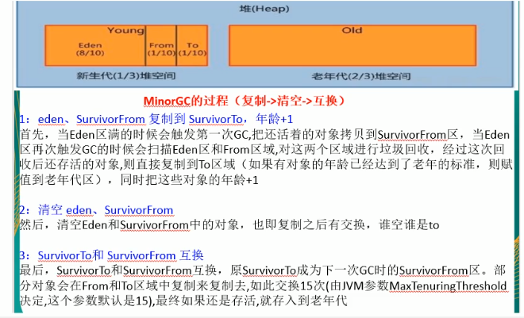
标记清除
算法分成标记和清除两个阶段，先标记出要回收的对象，然后统一回收这些对象。
优点：不需要大面积复制对象，缺点：会产生内存碎片
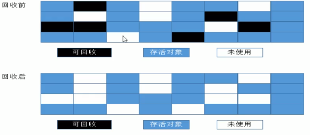
标记压缩
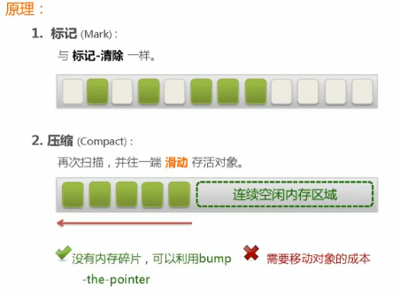
GC Roots
字符串结束符'\0'
垃圾
内存中已经不再被使用到的空间就是垃圾
如何判断一个对象是否可以被回收
引用计数法 （不使用）
枚举根节点做可达性分析(根搜索路径)
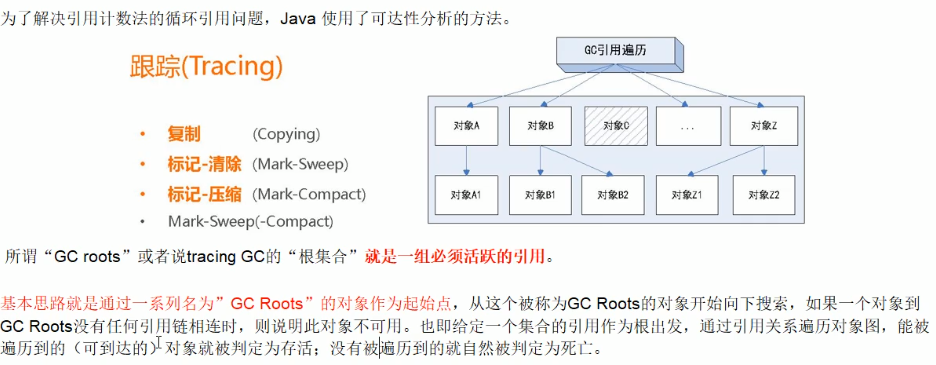
哪些对象可以用为 GC Roots的对象
- 虚拟机栈（栈帧中的局部变量，也叫做局部变量表）中引用的对象
- 方法区中的类静态属性引用的对象
- 方法区中常量引用的对象
- 本地方法栈中JNI(Native方法)引用的对象
GC详细日志查看
- -XX:PrintGCDetails: 查看GC收集的详细日志
GC在新生代区，Full GC在老年代区
GC Hello
[GC (Allocation Failure) [PSYoungGen: 2041K->488K(2560K)] 2041K->712K(9728K), 0.0039801 secs] [Times: user=0.00 sys=0.00, real=0.01 secs]
[GC (Allocation Failure) [PSYoungGen: 488K->504K(2560K)] 712K->728K(9728K), 0.0007173 secs] [Times: user=0.00 sys=0.00, real=0.00 secs]
[Full GC (Allocation Failure) [PSYoungGen: 504K->0K(2560K)] [ParOldGen: 224K->674K(7168K)] 728K->674K(9728K), [Metaspace: 3492K->3492K(1056768K)], 0.0043729 secs] [Times: user=0.00 sys=0.00, real=0.00 secs]
[GC (Allocation Failure) [PSYoungGen: 0K->0K(2560K)] 674K->674K(9728K), 0.0004317 secs] [Times: user=0.00 sys=0.00, real=0.00 secs]
[Full GC (Allocation Failure) [PSYoungGen: 0K->0K(2560K)] [ParOldGen: 674K->656K(7168K)] 674K->656K(9728K), [Metaspace: 3492K->3492K(1056768K)], 0.0072861 secs] [Times: user=0.00 sys=0.00, real=0.01 secs]
Heap
PSYoungGen total 2560K, used 57K [0x00000000ffd00000, 0x0000000100000000, 0x0000000100000000)
eden space 2048K, 2% used [0x00000000ffd00000,0x00000000ffd0e7a0,0x00000000fff00000)
from space 512K, 0% used [0x00000000fff00000,0x00000000fff00000,0x00000000fff80000)
to space 512K, 0% used [0x00000000fff80000,0x00000000fff80000,0x0000000100000000)
ParOldGen total 7168K, used 656K [0x00000000ff600000, 0x00000000ffd00000, 0x00000000ffd00000)
object space 7168K, 9% used [0x00000000ff600000,0x00000000ff6a4030,0x00000000ffd00000)
Metaspace used 3524K, capacity 4502K, committed 4864K, reserved 1056768K
class space used 391K, capacity 394K, committed 512K, reserved 1048576K
Exception in thread "main" java.lang.OutOfMemoryError: Java heap space
at com.zhou.java.test.Test.main(Test.java:18)
GC 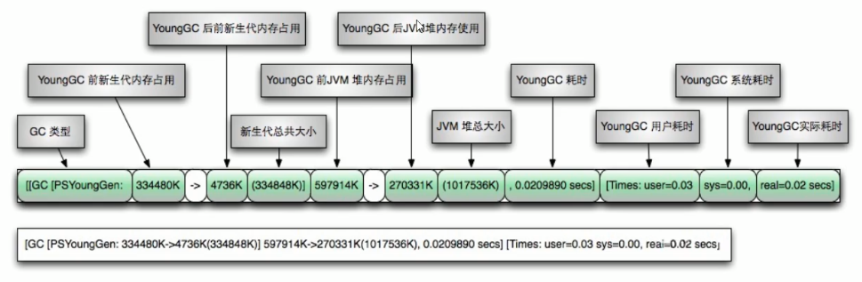
Full GC 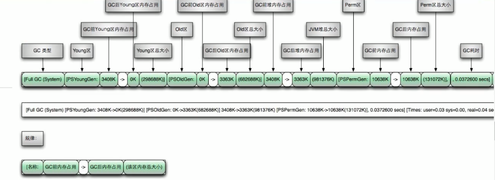
垃圾收集器
GC算法是内存回收的方法论，垃圾收集器就是算法落地实现。
Serial 串行垃圾回收器
它为单线程环境设计且只使用一个线程进行垃圾回收，会暂停所有的用户线程。所以不适合服务器环境。
Parallel 并行垃圾回收器
多个垃圾收集线程并行工作，此时用户线程是暂停的，适用于科学计算/大数据处理首台处理等弱交互场景。
CMS 并发垃圾回收器
用户线程和垃圾收集线程同时执行（不一定是并行，可能交替执行），不需要停顿用户线程。互联网公司多用它，适用对响应时间有要求的场景。
G1 (java9默认，10年时间验证)
ZGC （java11以上）
垃圾收集器
怎么查看服务器默认的垃圾收集器
java -XX:+PrintCommandLineFlags -version垃圾收集器种类
UseSerialGC --- Serial Copying
UseConcMarkSweepGC --- CMS
UseParNewGC --- ParNew
UserParallelGC --- Parallel Scavenge
UseParallelOldGC --- Paralll Compacting
UseG1GC
其中，Serial MSC (Serial Old),java8中已经废弃。
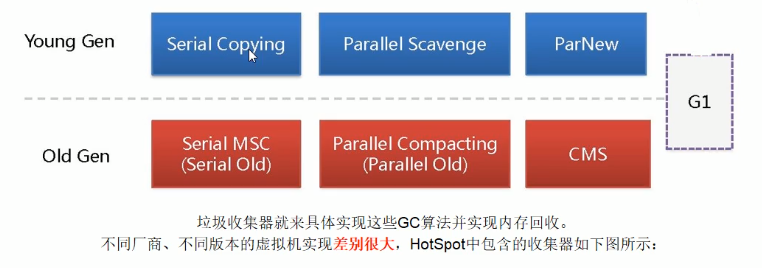
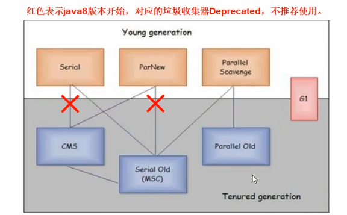
- 如何选择垃圾收集器 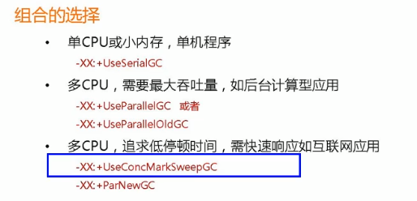 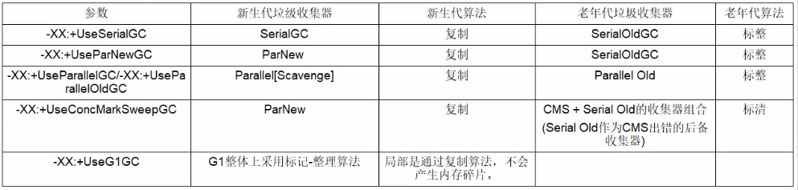
- 谈谈你对垃圾收集器的理解
GC约定参数说明
- DefNew: Default New Generation
- Tenured: Old
- ParNew: Parallel New Generation
- PSYoungGen: Parallel Scavenge
- ParOldGen: Parallel Old Generation
Serial收集器
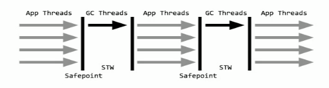
-Xms10m -Xmx10m -XX:+PrintGCDetails -XX:+PrintCommandLineFlags -XX:+UseSerialGC (DefNew+Tenured)
JVM参数：-XX:UseSerialGC
开启后：Serial(Young区用) + Serial Old(Old区用)的收集器组合
表示：新生代、老年代都会使用串行回收收集器，新生代使用复制算法，老年代使用标记-整理算法。
ParNew收集器
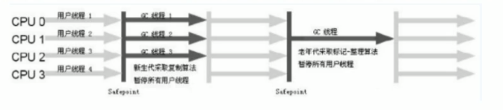
-Xms10m -Xmx10m -XX:+PrintGCDetails -XX:+PrintCommandLineFlags -XX:+UseParNewGC (ParNew+Tenured)
是Serial收集器新生代的并行多线程版本，最常见的应用场景是配合老年代的CMS GS工作，其余行为和Serial收集器完全一样。
它是很多java虚拟机运行在Server模式下新生代的默认垃圾收集器。
JVM参数：-XX:UseParNewGC
开启后：只影响新生代的收集，不影响老年代。ParNew(Young区用) + Serial Old(Old区用)的收集器组合
表示：新生代使用复制算法，老年代使用标记-整理算法。
Parallel收集器 （默认）
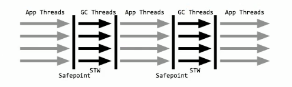 -Xms10m -Xmx10m -XX:+PrintGCDetails -XX:+PrintCommandLineFlags -XX:+UseParallelGC (PSYoungGen+ParOldGen) 吞吐量优先收集器。关注的重点如下：
- 可控制的吞吐量（=运行用户代码时间/(运行用户代码时间+垃圾收集时间)）。高吞吐量意味着高效利用CPU时间，它多用于后台运算而不需要太多交互的任务。
- 自适应调节策略：虚拟机会根据当前系统的运行情况收集性能监控信息，动态调整这些参数以提供最合适的停顿时间（-XX:MaxGCPauseMillis）或最大的吞吐量。
JVM参数：-XX:UseParallelGC或-XX:UseParallelOldGC(可互相激活)使用Parallel Scavenge收集器。
Parallel Old收集器
-Xms10m -Xmx10m -XX:+PrintGCDetails -XX:+PrintCommandLineFlags -XX:+UseParallelOldGC (PSYoungGen+ParOldGen)
为了在老年代同样提供吞吐量优先的垃圾收集器，如果系统对吞吐量要求比较高，可以配置。
在jdk1.6之前(Parallel Scavenge + Serial Old)。在jdk1.8之后(Parallel Scavenge + Parallel Old)
-XX:UseParallelOldGC
CMS收集器
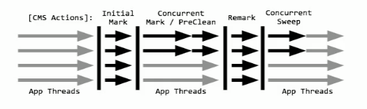
-Xms10m -Xmx10m -XX:+PrintGCDetails -XX:+PrintCommandLineFlags -XX:+UseConcMarkSweepGC (par new generation + concurrent mark-sweep)
并发标记清除收集器。
是一种以获取最短回收停顿时间为目标的收集器。适合应用在互联网或者B/S系统的服务器上，这类应用尤其重视服务器的响应速度，希望系统停顿时间最短。CMS非常适合堆内存大、CPU核数多的服务器端应用，也是G1出现之前大型应用的首选收集器。
-XX:+UseConcMarkSweepGC，开启后会自动将-XX:UseParNewGC打开。使用ParNew(Young区用)+CMS(Old区用)+Serial Old的收集器组合，Serial Old将作为CMS出错的后备收集器。
有4步过程，如下：
- 初始标记(CMS initial mark)：只中标记一下GC Roots能直接关联的对象，速度很快，仍然需要暂停所有的工作线程。
- 并发标记(CMS concurrent mark)：进行GC Roots跟踪的过程，和用户线程一起工作，不需要暂停工作线程。主要标记过程，标记全部对象。
- 重新标记(CMS remark)：修正在并发标记期间，因用户程序继续运行而导致标记产生变动的那一部分对象的标记记录，仍然需要暂停所有的工作线程。由于并发标记时，用户线程依然运行，因此在正式清理前，再做修正。
- 并发清除(CMS concurrent sweep)：清除GC Roots不可达对象，和用户线程一起工作，不需要暂停工作线程。基于标记结果，直接清理对象。由于耗时最长的并发标记和并发清除过程中，垃圾收集线程可以和用户一起并发工作。所以总体上来看CMS收集器的内存回收和用户线程是一起并发地执行。
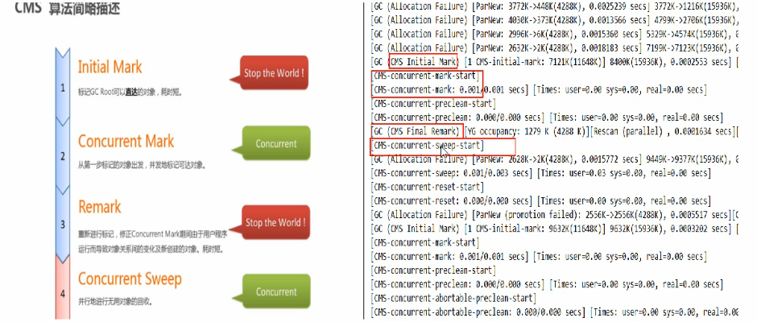
**优缺点**：- 优点：并发收集停顿低
- 缺点：并发执行，对CPU资源压力大；采用的标记清除算法会导致大量碎片。-XX:CMSFullGCsBeForeCompaction来指定多少次CMS收集之后，进行一次压缩的Full GC。
SerialOld收集器
理论知道即可，实际中java8已经被优化掉了，没有了。
-Xms10m -Xmx10m -XX:+PrintGCDetails -XX:+PrintCommandLineFlags -XX:+UseSerialOldGC
是Serial垃圾收集器的老年代版本，同样是单线程的收集器，使用标记整理算法，主要是运行在Client默认的java虚拟机默认的老年代垃圾收集器。
主要两个用途：
1、jdk1.5之前版本中与新生代的Parallel Scavenge收集器搭配使用。
2、作为老年代版中使用CMS收集器的后备垃圾收集方案。
G1垃圾收集器
以前收集器特点
- 年轻代和老年代是各自独立且连续的内存块
- 年轻代收集使用单eden+SO+S进行复制算法
- 老年代收集必须扫描整个老年代区域
- 都是以尽可能少而快速地执行GC为设计原则
G1是什么
是一款面向服务端应用的收集器，应用在多处理器和大容量内存环境中。有以下特性：
- 像CMS一样，与应用程序线程并发执行
- 整理空闲空间更快
- 需要更多的时间预测GC停顿时间
- 不希望牺牲大量的吞吐性能
- 不需要更大的Java Heap
设计目标是取代CMS收集器，与CMS相比，以下2点更出色：
- 是一个有整理内存过程的垃圾收集器，不会产生很多内存碎片
- Stop The World(STW)更可控，G1在停顿时间上添加了预测机制，用户可以指定期望停顿时间。
主要改变是：
- Eden、Survivor、Tenured等内存区域不再连续，而是变成一个个大小一样的region
- 每个region从1M到32M不等，一个region有可能属于Eden、Survivor或者Tenured内存区域。
特点：
- G1充分利用多CPU、多核环境，尽量缩短STW
- G1整体采用标记-整理算法，局部通过复制算法，不会产生内存碎片
- 宏观上G1不区分年轻代和老年代，把内存划分成多个独立的子区域
- 其本身依然在小范围内要进行年轻代和老年代的区分，不再物理隔离，依然会采用不同的GC方式来处理不同的region
- G1只有逻辑上的分代概念，或者说每个分区都可能随G1的运行在不同代之间前后切换
底层原理
区域化内存划分region，整体编为了一些不连续的内存区域，避免了全内存区的GC操作。
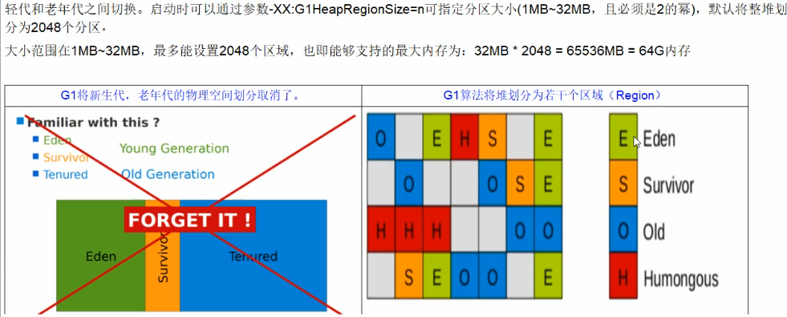
H默认在老年区，用于放置大对象。
回收原理，针对Eden区进行收集，Eden区耗尽后会被触发，主要是小区域收集+形成连续的内存块，避免内存碎片：
- Eden区数据移动到Survivor区，假如Survivor区空间不够，Eden区数据会部分晋升到Old区
- Survivor区的数据移动到新的Survivor区，部分数据晋升到Old区
- 最后Eden区收拾干净了，GC结束，用户的应用程序继续执行
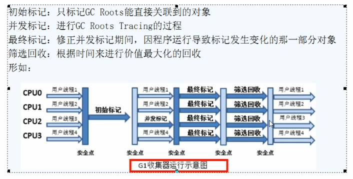
参数
- -XX:+UseG1GC
- -XX:G1HeapRegionSize=n。值是2的幂，范围1-32MB，最大2048
- -XX:MaxGCPauseMillis=n 最大GC停顿时间
- -XX:InitiatingHeapOccupancyPercent=n 堆点用了多少的时候触发GC
- -XX:ConcGCThreads=n 并发GC使用的线程数
- -XX:G1ReservePercent=n 设置作为空闲空间的预留内存百分比
小总结
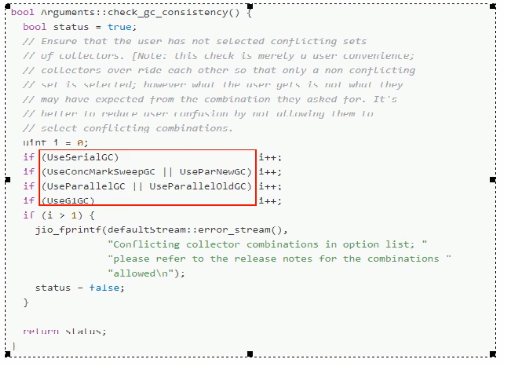
JVM、GC结合Spring Boot微服务调参
java -server [JVM参数] -jar xxx.war jps -l jinfo -flags pid